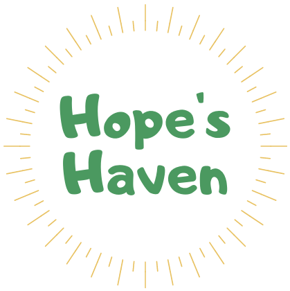
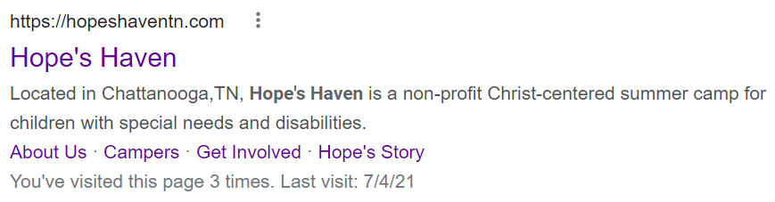

Hopeshaventn.com
Hope's Haven is a non-profit Christ-centered summer camp for children with special needs and disabilities.
The Beginning
 My friend, founder and CEO of Hope's Haven, Abbey Sutherland asked me to create a website for her non-profit. Hope's Haven is a Christ-centered summer camp for children with special needs and disabilities. They provide an environment for campers to grow in Christ, in relationships, and in confidence. At this moment, the camp is not yet built, but Hope's Haven is running events for its campers to enjoy, and there are plenty of fundraising events to help raise money for the future of the camp. This, of course, is a massive goal, which I partake in a small but vital role as the web designer. I have designed Hope's Haven's website in a way that engages interaction from the public, gives volunteers ways to support our non-profit, and provides information to the parents of campers. It is important that I create a fun, informative, and professional website that best reflects the message of Hope's Haven and provides accurate design changes as requested by Abbey. I love Hope's Haven's mission and hope to continue being part of the team for years to come.
A mobile website
To best make Hope's Haven accessible to hundreds of people, I have to make sure that it is effective on a mobile browser. Most of our sponsors, donors, supporters, and friends find out about Hope's Haven and its mission through social media, and from either our Facebook or Instagram page, they navigate to our website on what's likely a mobile browser. So, I need to make sure that their mobile experience on the website is just as good, if not better, than that on a browser. On the right, you can see a demonstration of the mobile browser. The navigation bar is hidden in the three line button (commonly known as a hamburger). This expands a menu when tapped and makes it more mobile friendly than trying to cram the navigation menu into a small window. Another major thing is making each element in a row on the website stack on top of each other, so the user can just scroll down to see each part. I have seen websites that do not do this and it makes the text and features really small and hard to read and forces the user to zoom in. Even highly professional sites are like this, but I do not think that something like this is acceptable for a website in this day and age.
Search results
Another large part and commonly overlooked aspect of web design is search results, more specifically, Google search results. A normal person would think that if you were to name your website after your organization and everything in your website discussed and mentioned something concerning your organization, Google would automatically bring your website up as a top search result, but that is simply not true. Other than paying to be an advertisement on Google (which Hope's Haven does not do), there are some tricks to make your website appear as some of the first few search results.
Take a look at the following code snippet located in the HTML
header:
<link href="https://hopeshaventn.com"
rel="canonical"/>
This tells Google what the canonical page is for the website. The
canonical page is the main/first page of the website and encourages
Google to use this page as one of its search results relating to the
website.
Also located in the HTML header is the website description:
<meta name="description" content="Located in Chattanooga, TN,
Hope's Haven is a non-profit Christ-centered summer camp for
children with special needs and disabilities." />
This description tells google what to show as the search result:

This search result also shows the different pages on the site: About
Us, Campers, Get Involved, and Hope's Story.
Another way to enhance search results is adding descriptors to the alt element of an image:
<img
src="images/kids/partyKid.jpeg"
alt="Hope's Haven Special Needs Summer Camp: camper dancing to music"
style="padding: 15px"
/>By adding descriptors to images, Google uses these for Google Images search results and is more likely to improve your website's search result location for searches that contain similar words to your descriptor.
Closing Comments
I am extremely grateful for the opportunity to support such an amazing non-profit through my talents. Building Hope's Haven's website has helped me understand how to work for a client and listen to their requests. I, also, learned a great deal about designing a website with end-users in mind. Making something more engaging and user-friendly will help bring more traffic to the website. I am excited to see how my web development skills develop over the years through Hope's Haven!